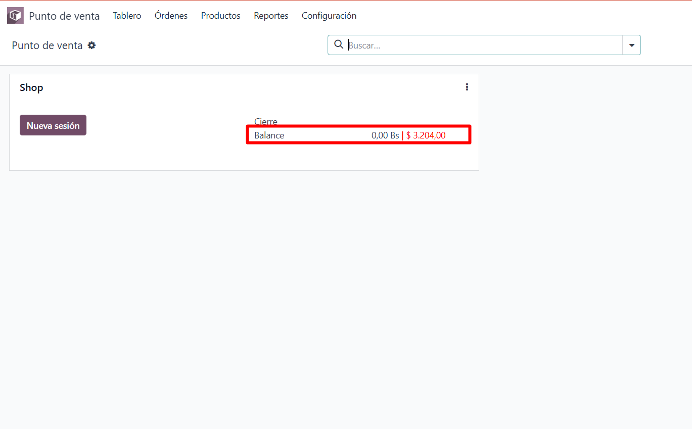

<div class="container">
    <section>
        <h2 style="margin-top: 20px; margin-bottom: 15px;">Hide the balance field in POS</h2>
        <p>This module allows you to hide the swing field in the kanban view of the POS.</p>
        
        
    </section>
</div>